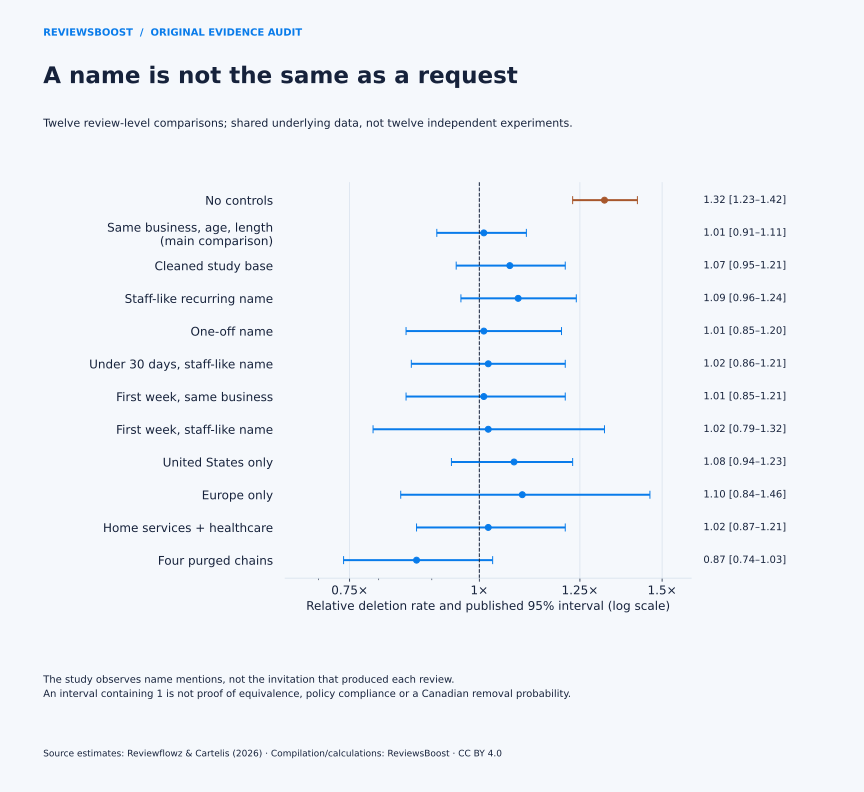
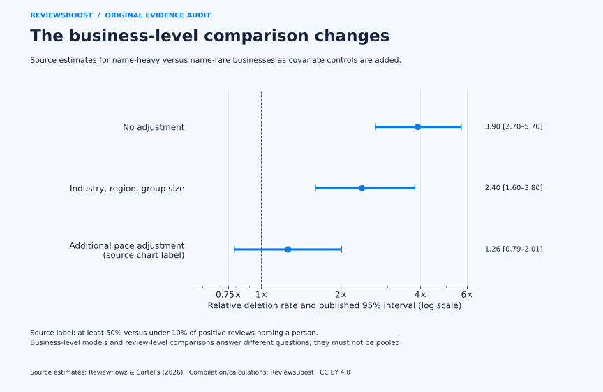
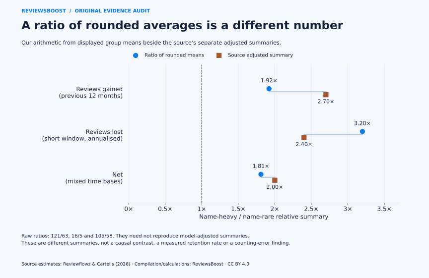

Can a business ask for staff names in Google reviews?
Google’s current policy says merchants should not request specific review content, and explicitly includes staff-directed requests for content identifying a staff member. An independently written name mention is a different event. A study of whether named reviews disappear cannot establish whether the earlier request followed that rule. Google’s published policy.
- A checked compilation of 15 relative-rate estimates and four review-growth summaries from Reviewflowz and Cartelis’s October 2026 report.
- Three original graphs that separate review-level comparisons, business-level comparisons and growth arithmetic.
- A new three-row comparison of ratios of rounded means versus distinct adjusted summaries, plus eight clearly labelled request examples.
- Open CSV/JSON data, source-page references, reproduction code and a visible distinction between study observations and our own calculations.
The source study is Gone in 7 Days, by Reviewflowz and Cartelis. Its selected US/European panel was observed in August 2026; it is not a Canadian sample or a record of ReviewsBoost cases. Our contribution is this secondary compilation and audit, not a claim that we independently tracked its reviews.
A name mention and a directed request are different evidence
There are at least three separate facts to establish: what the business asked, what the customer wrote and what happened to the review. Observing the last two does not reveal the first. A name could have been volunteered, suggested, copied or inserted for some unrelated reason. We cannot tell which from a person-name tag.
Under Rating Manipulation, Google explicitly refers to requests containing content that identifies a staff member
. It also restricts review quotas for staff and attempts to steer ratings or content. Its review-request guidance supports inviting genuine feedback without incentives. Those are the relevant rules for designing an invitation; a short-term deletion comparison is not a substitute.
Names also raise a separate content question. Google’s personal-information rules have their own scope and exceptions, including public-facing professionals doing business under their names. A name mention alone therefore neither proves a review violates policy nor guarantees that it complies. Read the actual content and context rather than turning a name detector into a removal test.
What the review-level comparisons actually measure
On PDF page 23, the source reports 12 relative-rate comparisons. They share underlying data; they are not 12 independent experiments. The name analysis uses positive reviews with text and distinguishes several model variants, regions and subsets. The first row is unadjusted. The main within-business comparison controls for review age and length; the source methods describe further modelling details on page 27. Study table.



The main estimate, 1.01× [0.91–1.11], corresponds to a relative point difference of +1%, with printed interval endpoints equivalent to −9% and +11%. These are relative rate differences, not percentage-point changes in an absolute deletion probability. If a baseline were unknown, this table would not supply it.
That interval contains 1. It does not establish exact equality, prove the absence of enforcement or certify a name-directed campaign. The general statistical distinction is discussed by Altman and Bland (1995); their article supplies methodological context, not independent validation of Google review data. We calculate no new p-values or equivalence tests.
Inspect the 12 source review-level comparisons
| Source comparison | Relative rate [95% interval] | PDF page |
|---|---|---|
| All reviews, no controls | 1.32× [1.23–1.42] | 23 |
| Same business, same age, same length (main test) | 1.01× [0.91–1.11] | 23 |
| Same, on the cleaned study base | 1.07× [0.95–1.21] | 23 |
| Staff-like name (recurs in 3+ reviews) | 1.09× [0.96–1.24] | 23 |
| One-off name | 1.01× [0.85–1.20] | 23 |
| Reviews under 30 days old, staff-like name | 1.02× [0.86–1.21] | 23 |
| First week, same business | 1.01× [0.85–1.21] | 23 |
| First week, staff-like name | 1.02× [0.79–1.32] | 23 |
| United States only | 1.08× [0.94–1.23] | 23 |
| Europe only | 1.10× [0.84–1.46] | 23 |
| Home services and healthcare | 1.02× [0.87–1.21] | 23 |
| Inside the four purged pest-control chains | 0.87× [0.74–1.03] | 23 |
The name-recognition method matters too. The source applies GLiNER to 2,675,861 positive reviews with text. Zaratiana and colleagues’ GLiNER paper describes named-entity recognition, not verification of employment, consent or solicitation. A detected person could be a staff member, a customer or somebody else. We do not independently rerun the model or transfer its performance to English/French Canadian reviews.
Why name-heavy profiles can look different
A business-level comparison asks a different question from a review-level one. It compares profiles with different name-share patterns, not two otherwise similar reviews on one profile. A profile can differ in industry, review volume, location count and review age. The source presents three successive relative-rate summaries on PDF page 3, with discussion on page 24. Published chart and definitions.



| Source comparison | Relative rate [95% interval] |
|---|---|
| All businesses (unadjusted) | 3.90× [2.70–5.70] |
| Same industry, region and size | 2.40× [1.60–3.80] |
| Same industry, region, size and pace | 1.26× [0.79–2.01] |
The final printed interval, 0.79–2.01×, is substantially wider than the main review-level interval. It permits a range of relative rates under that model. Combining the two into a single average would erase their different units of comparison, controls and overlapping observations. Our download keeps a separate comparison_level field so a later analyst does not do that accidentally.
New calculation: why the displayed averages do not give 2.7×
The source’s growth table has four name-share groups. For the lowest and highest groups it displays average gains of 63 and 121, losses of 5 and 16, and net values of 58 and 105. Its accompanying adjusted summaries are 2.7× gained, 2.4× lost and 2.0× net. We preserve both sets of numbers, then calculate three transparent ratios of the rounded means. Flow table · Adjusted-summary wording.
| Quantity | Displayed high / low means | Our nominal ratio | Source adjusted summary |
|---|---|---|---|
| Gained | 121 / 63 | 1.921× | 2.7× |
| Annualised losses | 16 / 5 | 3.200× | 2.4× |
| Net | 105 / 58 | 1.810× | 2.0× |



This distinction is useful when quoting growth claims. A writer can reproduce 121 ÷ 63 ≈ 1.92 from the displayed means, or cite the publisher’s separate adjusted summary of 2.7. The writer should identify which one is being used. Neither shows that adding a staff-name prompt will cause that increase.
The time bases also differ. Gains cover the preceding twelve months; the source scales losses observed over two weeks to a year. Consequently, 1 − annualised losses ÷ historical gains is not an observed annual retention probability. The underlying reviews, exposure periods and changing review stock are not a fixed one-year cohort.
Rounding creates another reason not to reconstruct exact rates from displayed counts. The third group displays 23 losses and 111 gains; their quotient is about 20.72 per 100, while the source’s separate rounded loss-per-100 display is 20. Unrounded inputs or a different aggregation method can matter. Our CSV labels the quotient nominal, preserves the publisher’s value separately and makes no error allegation.
Eight request examples, coded separately from the study
These are examples written by ReviewsBoost to make the policy distinction usable. They are not quotes from customers, observed campaigns, Google decisions or certified legal advice. Their categories are our editorial mapping to the current policy, not a numerical risk score.
| Example request or process | Editorial reading |
|---|---|
| If you would like, share an honest review of your experience. | Leaves the rating and content to the customer; no incentive. |
| Please include the name of the team member who helped you. | Directs the requested review content, including a staff identifier. |
| Please leave us five stars. | Attempts to influence the rating. |
| Leave a review to receive a discount. | Offers a benefit for posting a review. |
| Only customers who say they are happy receive the Google link. | Routes invitations based on positive sentiment. |
| Each staff member must bring in ten reviews this month. | Sets a required number of reviews for staff to solicit. |
| You must post your rating here before we finish your appointment. | Requires the customer to rate while on the premises. |
| You can use this link later if you choose to leave feedback. | Optional invitation; does not direct rating, wording or timing on site. |
The neutral examples leave both the rating and wording to the customer. You can identify the sender or provide a direct review link without directing the recipient to mention that sender. Keep internal staff coaching focused on a consistent invitation process, not a quota or a promised number of positive reviews.
A practical workflow for Canadian businesses
For a Toronto salon, an Ottawa service company or a Vancouver clinic, the useful output is a request process that respects customer choice. The study does not supply city-specific effects, and none should be invented for a local landing page. A practical workflow is:
- Choose an eligibility rule independent of sentiment. Invite customers after a completed experience, rather than sending the Google link only to people who first report being happy.
- Leave the content open. Request honest feedback without prescribing a star rating, staff name, keyword or positive script.
- Review the actual invitation. Check receipts, cards, QR-code pages and staff instructions. A review mentioning a person cannot tell you whether those materials were appropriate.
- Separate permission from visibility. A review staying online does not certify the request, and a disappearance does not establish why it happened.
- Keep identifiable details private. If a review raises a personal-information concern, assess the exact content and applicable exceptions before reporting it. Do not publish private records in a response.
If you would like, you can share an honest review of your experience using this link. What you write and the rating you choose are entirely up to you.
Use our review-request guide and Google link and QR-code guide to put the invitation in place. For a specific review concern, our evidence checker helps organise public links and context. An initial assessment request takes no Google password and does not guarantee a removal.
Methods, provenance and limits
We retrieved the 28-page report and live policy pages on November 2, 2026. We visually checked the review-level table on PDF page 23, business-level chart on page 3, growth summaries on pages 4 and 24, and methods on page 27. The public input JSON preserves source labels, page locations and the original PDF’s SHA-256 fingerprint. The private capture is retained for checking; the report itself is linked, not republished.
The builder transforms relative rates to relative percentage differences using 100 × (rate ratio − 1). It calculates ratios of displayed rounded group means using exact fractions before formatting. A separate audit checks those transformations, all 19 source rows, the eight constructed-example labels and CSV/JSON/CSVW consistency without importing the builder.
The source observes successive daily listings during August 11–24, 2026. Disappearance does not identify an author deletion, a platform enforcement reason, a legal request or a merchant report. The study also does not observe how reviews were requested. We have not obtained its individual review records, reproduced its regressions or independently validated its tagger. Source group boundaries and chart labels are preserved rather than silently redefined.
Commercial interest: ReviewsBoost provides paid review-related assistance and has an interest in this subject. This publication reports no client results, no Canadian causal effects and no independent peer review. Our contribution is the attributed compilation, new calculations, charts and constructed teaching examples. Corrections can be requested through our editorial policy.
Questions businesses ask about staff names in reviews
Will Google remove a review just because it names an employee?
The study does not establish an automatic deletion rule. A name alone is not the same as a directed request, and other content or personal-information rules can still be relevant. Assess the actual text and context.
Does the 1.01× result mean a name-directed request is allowed?
No. That is a relative-rate estimate for a stated review comparison. The source does not observe the original invitation. Google’s request-content policy is a separate source.
Can a doctor, lawyer or other professional be named?
Google’s personal-information policy lists exceptions for public-facing professionals conducting business under their names. That does not authorise businesses to direct the content of requested reviews or override other policies.
Do the growth figures prove asking for names increases reviews?
No. Businesses with different name-share patterns can differ in their service, industry, size, customer mix and request processes. Ratios of group averages and adjusted associations are not an experiment changing an invitation.
Is this new Canadian review data?
No. It is a new evidence audit and dataset compiled by ReviewsBoost from attributed US/European study summaries and Google’s current policy. The request examples are separately labelled as constructed.
Open data, charts and citation
- 15 attributed relative-rate estimates, intervals and percentage-scale calculations · CSVW definitions.
- Four source growth summaries with rounded-mean arithmetic and time bases · CSVW definitions.
- Three original raw-ratio comparisons beside distinct adjusted summaries · CSVW definitions.
- Eight constructed review-request examples with editorial policy mapping; not observed cases · CSVW definitions.
- Complete release, provenance, calculations and limitations.
- Source inputs and PDF fingerprint.
- Dataset builder · Independent audit · Plotting script · Article builder.
- BibTeX citation · Citation File Format.
Run python build-google-staff-name-data.py and python audit-google-staff-name-data.py. Add --fetch to the audit to verify the public source PDF fingerprint. Plotting uses python plot-google-staff-name-study.py with Matplotlib installed. Our compilation, calculations, examples and original charts are CC BY 4.0; source publishers retain rights in their material. The source landing page authorises reuse of its numbers with attribution.
ReviewsBoost Editorial Team. (2026, November 2). Staff names in Google reviews: a study-to-policy evidence audit (Version 1.0.0). Article and open dataset. Attribute the underlying study estimates to Reviewflowz and Cartelis; identify our ratios as calculations and request examples as constructed.
Primary sources and methodological context
- Reviewflowz and Cartelis (October 2026), Gone in 7 Days. PDF pages 3–4, 23–24 and 26–27: selected tables, adjusted summaries, scope, limitations and methods.
- Reviewflowz and Cartelis: public research summary and reuse permission. Source numbers and chart reuse require attribution; checked November 2, 2026.
- Google Maps: prohibited and restricted content. Rating Manipulation and Personal information sections; checked November 2, 2026.
- Google Business Profile: tips to get more reviews. Genuine, unincentivised invitations and review links; checked November 2, 2026.
- Zaratiana, U., Tomeh, N., Holat, P., and Charnois, T. (2024), GLiNER. NAACL 2024, 5364–5376. DOI: 10.18653/v1/2024.naacl-long.300. Model-method context, not verification of the source’s tags.
- Altman, D. G., and Bland, J. M. (1995), Absence of evidence is not evidence of absence. BMJ 311:485. DOI: 10.1136/bmj.311.7003.485. General statistical context, not Google-specific validation.